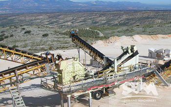
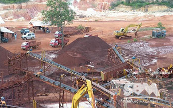
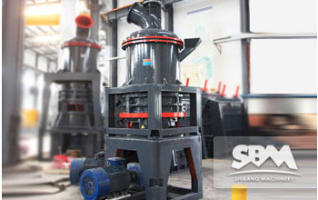
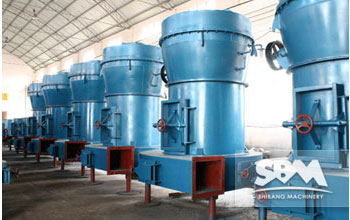
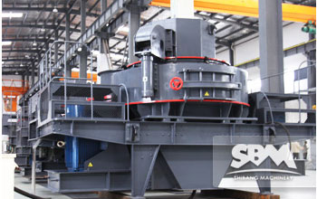
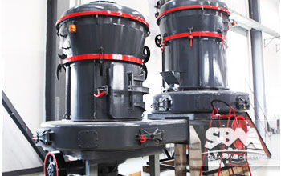
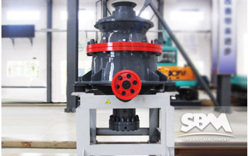

- 
Rock Crusher Machine
Rock and crushed stone products are generally loosened at the quarry site by drilling or blasting. At the quarry, the materials are loaded.
MORE INFO >Live Chat - 
Iron Ore Crushing Line
Iron is the earliest found, most widely used metal in the whole world. The consumption of iron occupies about 95% of all the metal consumption.
MORE INFO >Live Chat - 
Barite Powder Production
Barite is a kind of very important non-metallic mineral, has wide applications. Most barite is used as weighting agent in mud drilling.
MORE INFO >Live Chat - 
Mining Equipment For Sale
SBM is a professional mining equipment manufacturer with over twenty years’ experience. We provide all kinds of mining equipment.
MORE INFO >Live Chat - 
Artificial Sand Crushing Plant
Specifications vary from region to region and application of manufactured sand differs from operator to operator.
MORE INFO >Live Chat - 
Dolomite Crusher Plant
Typical quarrying methods to extract the dolomite will be used. Operation will include drilling and blasting, loading and hauling from.
MORE INFO >Live Chat -

Copper Ore Processing Plant
Because of its great corrosion resistance and tractable, copper and its alloy is used to make currency, weapons, household utensils and wires and so on.
MORE INFO >Live Chat - 
Marble Jaw Crusher
Marble is a kind of metamorphic rock forms when limestone is subjected to the heat and pressure of metamorphism.
MORE INFO >Live Chat